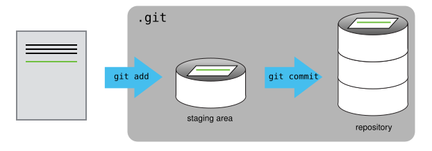

Tracking, adding, committing, restoring changes
git statusshows the status of a repository.
- Files move through three states: the working directory, the staging area, and the local repository.
git addstages files;git commitpermanently records them.
- Write commit messages that accurately describe your changes.
git diffcompares versions of files across the working directory, staging area, and commits.
git restore --source <commit-id> <filename>restores a file to a previous state without altering commit history.
HEADrefers to the most recent commit;HEAD~1,HEAD~2etc. refer to earlier commits.
First let’s make sure we’re still in the right directory. You should be in the recipes directory.
cd ~/Desktop/recipesLet’s create a file called guacamole.qmd that contains the basic structure of our first recipe. We’ll use nano to edit the file; you can use whatever editor you like. In particular, this does not have to be the core.editor you set globally earlier. But remember, the steps to create or edit a new file will depend on the editor you choose (it might not be nano). For a refresher on text editors, check out “Which Editor?” in The Carpentries Unix Shell lesson.
nano guacamole.qmdPut some text in your guacamole.qmd file, for example:
(I am leaving instructions blank here to add in an example later of file modification)
# Guacamole recipe
## Ingredients
- Avocado
- Coriander
- Red onion
- Lemon juice
- Salt
## Instructions
Save your file and exit nano.
Verify that the file was made, using ls and cat commands to explore the file.
If we check the status of our project again, Git tells us that it’s noticed the new file:
git statusOn branch main
No commits yet
Untracked files:
(use "git add <file>..." to include in what will be committed)
guacamole.qmd
nothing added to commit but untracked files present (use "git add" to track)The “untracked files” message means that there’s a file in the directory that Git isn’t keeping track of. We can tell Git to track a file using git add:
git add guacamole.qmdand then check that the right thing happened:
git statusOn branch main
No commits yet
Changes to be committed:
(use "git rm --cached <file>..." to unstage)
new file: guacamole.qmdGit now knows that it’s supposed to keep track of guacamole.qmd, but it hasn’t recorded these changes as a commit yet. The file is in what is called the ‘staging area’.
Git has a special staging area where it keeps track of things that have been added to the current changeset but not yet committed. Git insists that we add files to the staging we want to commit before actually committing anything. This allows us to commit our changes in stages and capture changes in logical portions rather than only large batches.
If you think of Git as taking snapshots of changes over the life of a project, git add specifies what will go in a snapshot (putting things in the staging area), and git commit then actually takes the snapshot, and makes a permanent record of it (as a commit). If you don’t have anything staged when you type git commit, Git will prompt you to use git commit -a or git commit --all, which is kind of like gathering everyone to take a group photo! However, it’s almost always better to explicitly add things to the staging area, because you might commit changes you forgot you made. (Going back to the group photo simile, you might get an extra with incomplete makeup walking on the stage for the picture because you used -a!) Try to stage things manually, or you might find yourself searching for “git undo commit” more than you would like!

To get it to commit the staged files, we need to run one more command:
git commit -m "Create initial structure for a Guacamole recipe"When we run git commit, Git takes everything we have told it to save by using git add and stores a copy permanently inside the special .git directory. This permanent copy is called a commit (or revision) and its short identifier is f22b25e. Your commit may have another identifier.
We use the -m flag (for “message”) to record a short, descriptive, and specific comment that will help us remember later on what we did and why. If we just run git commit without the -m option, Git will launch nano (or whatever other editor we configured as core.editor) so that we can write a longer message.
Good commit messages start with a brief (<50 characters) statement about the changes made in the commit. Generally, the message should complete the sentence “If applied, this commit will” . If you want to go into more detail, add a blank line between the summary line and your additional notes. Use this additional space to explain why you made changes and/or what their impact will be.
If we run git status now:
git statusOn branch main
nothing to commit, working tree cleanit tells us everything is up to date. If we want to know what we’ve done recently, we can ask Git to show us the project’s history using git log, it will list all commits made to a repository in reverse chronological order. The listing for each commit includes the commit’s full identifier (which starts with the same characters as the short identifier printed by the git commit command earlier), the commit’s author, when it was created, and the log message Git was given when the commit was created.
Now suppose we add more information to the file. (Again, we’ll edit with nano and then cat the file to show its contents; you may use a different editor, and don’t need to cat)
nano guacamole.qmdAdd some text (here I have now added instructions):
# Guacamole recipe
## Ingredients
- Avocado
- Coriander
- Red onion
- Lemon juice
- Salt
## Instructions
1. Mash the avocado
2. Finely chop the coriander and red onion
3. Add salt and lemon juice to taste
4. Enjoy! Save your file and exit nano.
When we run git status now, it tells us that a file it already knows about has been modified:
git statusOn branch main
Changes not staged for commit:
(use "git add <file>..." to update what will be committed)
(use "git restore <file>..." to discard changes in working directory)
modified: guacamole.qmd
no changes added to commit (use "git add" and/or "git commit -a")The last line is the key phrase: “no changes added to commit”. We have changed this file, but we haven’t told Git we will want to save those changes (which we do with git add) nor have we saved them (which we do with git commit). So let’s do that now.
We can also add multiple files at once to the staging area, by specifiying all the files in one command:
git add guacamole.qmd groceries.qmdOr, by using git add . to add all files (new, modified, deleted files) in the current directory and subdirectories to the staging area:
git add .Or, by using git add -A to add all files (new, modified, deleted files) in the entire repository to the staging area:
git add -AIf you need to delete a file that has already been added to the staging area, (which means git is now tracking it), you need use git rm to remove the file (not just rm), so that git knows you want to delete it AND stop tracking it.
# stops tracking and deletes the file
git rm file.qmd # stops tracking but keeps the file
git rm --cached file.qmd Don’t forget to then commit your staged changes!
Review changes with git diff
It is good practice to always review our changes before saving them. We do this using git diff. This shows us the differences between the current state of the working file and the staged area:
git diffdiff --git a/guacamole.qmd b/guacamole.qmd
index ad0d963..6249f4c 100644
--- a/guacamole.qmd
+++ b/guacamole.qmd
@@ -8,3 +8,7 @@
- Salt
## Instructions
+1. Mash the avocado
+2. Finely chop the coriander and red onion
+3. Add salt and lemon juice to taste
+4. Enjoy!The output is cryptic because it is actually a series of commands for tools like editors and patch telling them how to reconstruct one file given the other. If we break it down into pieces:
- The first line tells us that Git is producing output similar to the Unix diff command comparing the old and new versions of the file.
- The second line tells exactly which versions of the file Git is comparing; ad0d963 and 6249f4c are unique computer-generated labels for those versions.
- The third and fourth lines once again show the name of the file being changed.
- The remaining lines are the most interesting, they show us the actual differences and the lines on which they occur. In particular, the + marker in the first column shows where we added a line.
git add guacamole.qmdgit diffYou’ll notice that git diff produces no output. This is because git diff only compares the working file to the staging area — once a file is staged, there are no remaining differences between them.
To see the differences between what is staged and the last commit, we use the --staged flag:
git diff --stagedThe output will now be the same as we saw earlier:
diff --git a/guacamole.qmd b/guacamole.qmd
index ad0d963..6249f4c 100644
--- a/guacamole.qmd
+++ b/guacamole.qmd
@@ -8,3 +8,7 @@
- Salt
## Instructions
+1. Mash the avocado
+2. Finely chop the coriander and red onion
+3. Add salt and lemon juice to taste
+4. Enjoy!Final commit and review history
It’s time to commit the modified version.
git commit -m "Add instructions for basic guacamole"[main 8a8041c] Add instructions for basic guacamole
1 file changed, 4 insertions(+)Now let’s check the project history and we can see that we have two commits, displayed in reverse chronological order (most recent commit first):
git logcommit 1fc9cfd11bca89c9b43c7efbf1bb0534340f2eef (HEAD -> main)
Author: username <useremail@email.com>
Date: Sat Apr 25 14:12:19 1953 +1200
Add instructions for basic guacamole
commit 6d366b34965525200eeb4b2e8ec3252e4f875a34
Author: username <useremail@email.com>
Date: Sat Apr 25 13:05:57 1953 +1200
Create initial structure for a Guacamole recipeWe can use git diff with either HEAD~1 or the commit ID to see the differences between the current state of the working file and the referenced commit.
For example, let’s use the first commit ID to see the differences between the current state of the working file and that commit (you will need to use yours!):
git diff 6d366b34965525200eeb4b2e8ec3252e4f875a34or use the 7 first characters of the commit ID:
git diff 6d366b3# Output - same as earlier
diff --git a/guacamole.qmd b/guacamole.qmd
index ad0d963..6249f4c 100644
--- a/guacamole.qmd
+++ b/guacamole.qmd
@@ -8,3 +8,7 @@
- Salt
## Instructions
+1. Mash the avocado
+2. Finely chop the coriander and red onion
+3. Add salt and lemon juice to taste
+4. Enjoy!Or we can use HEAD. HEAD is a special reference that always points to the most recent commit on the current branch. So, if we want to see the differences between the current state of the working file and the most recent commit, we can use:
git diff HEADOur most recent commit is the one we just made, and there are no differences between the current state of the working file and the last commit – so no output!
Let’s look at the differences between the current state of the working file and the previous commit (the one before the most recent commit). We can use HEAD~1 to refer to the commit one before the most recent commit:
git diff HEAD~1# Output - same as earlier
diff --git a/guacamole.qmd b/guacamole.qmd
index ad0d963..6249f4c 100644
--- a/guacamole.qmd
+++ b/guacamole.qmd
@@ -8,3 +8,7 @@
- Salt
## Instructions
+1. Mash the avocado
+2. Finely chop the coriander and red onion
+3. Add salt and lemon juice to taste
+4. Enjoy!You can use HEAD~1, HEAD~2, HEAD~3 etc. to refer to earlier commits.
Restore files to a previous state
One of the most powerful features of Git is the ability to restore files to a previous state. This is useful when you want to undo changes, or when you want to go back to a previous version of a file.
We use git restore to do this. To restore a file to the state it was in at a specific commit, we use the --source (or -s) flag followed by the commit ID (or a HEAD reference), and then the filename:
git restore --source <commit-id> <filename>Let’s restore guacamole.qmd to how it looked at our first commit — before we added the instructions. We can use the first 7 characters of the commit ID:
git restore --source 6d366b3 guacamole.qmdNow open or cat guacamole.qmd and you’ll see the instructions section is gone — the file is back to just the ingredients list. Git hasn’t deleted any history, it has simply replaced the working file with the older version.
cat guacamole.qmd# Guacamole recipe
## Ingredients
- Avocado
- Coriander
- Red onion
- Lemon juice
- Salt
## InstructionsWe can confirm this with git diff HEAD:
git diff HEADdiff --git a/guacamole.qmd b/guacamole.qmd
index 6249f4c..ad0d963 100644
--- a/guacamole.qmd
+++ b/guacamole.qmd
@@ -8,7 +8,3 @@
- Salt
## Instructions
-1. Mash the avocado
-2. Finely chop the coriander and red onion
-3. Add salt and lemon juice to taste
-4. Enjoy!The - markers show that the instructions lines are in the HEAD version of the file (a), but not in the working file (b). Importantly, while in this case it is true that the lines are removed from the working file, but it is more correct to say the markers designate which file version the lines belong to.
Now let’s restore the file back to the most recent commit so we can continue working. We can use HEAD to refer to the most recent commit:
git restore --source HEAD guacamole.qmdWe can confirm there are no differences between the working file and the latest commit:
git diff HEADNo output — our working file matches the latest commit and we’re ready to continue. We can cat our guacamole.qmd to confirm our instructions are back:
cat guacamole.qmd# Guacamole recipe
## Ingredients
- Avocado
- Coriander
- Red onion
- Lemon juice
- Salt
## Instructions
1. Mash the avocado
2. Finely chop the coriander and red onion
3. Add salt and lemon juice to taste
4. Enjoy! git restore is safe to use because it only affects your working file. Your commit history is never altered.
CHALLENGE ⚡️
Recovering Older Versions of a File
Jennifer has made changes to the Python script that she has been working on for weeks, and the modifications she made this morning “broke” the script and it no longer runs. She has spent ~ 1hr trying to fix it, with no luck…
Luckily, she has been keeping track of her project’s versions using Git! Which commands below will let her recover the last committed version of her Python script called data_cruncher.py?
git restoregit restore data_cruncher.pygit restore -s HEAD~1 data_cruncher.pygit restore -s <unique ID of last commit> data_cruncher.pyBoth 2 and 4